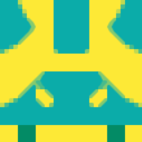

Welcome to my page!


My Blockie

Hey there, my name is Seth Myers. I'm an electrician by trade and currently work in the building automation field. Transitioning from maintenance electrician/solar electrician, to my current role as a BAS Technician, I quickly learned about network architecture, APIs, GUIs, cloud services, and other web building blocks as most of our sites we touch are connected through a VPN to central platform where clients are able to view their sites remotely to check building performance, alarms, future PM forecasts, etc. I had the experience of programming PLCs but as I moved to the BAS world I started to then understand how to connect all of these smart devices together once programmed. I was fascinated to say the least and wanted to see how far I could take it. Within the last year or so I've recognized that the growing demand for people with more IT/IoT based knowledge in all working fields and my interest in learning it were parallel to one another. I'm very new to all programming languages so I thought it wise to enroll in MIT's Full Stack Development with MERN program rather than self teach entirely.